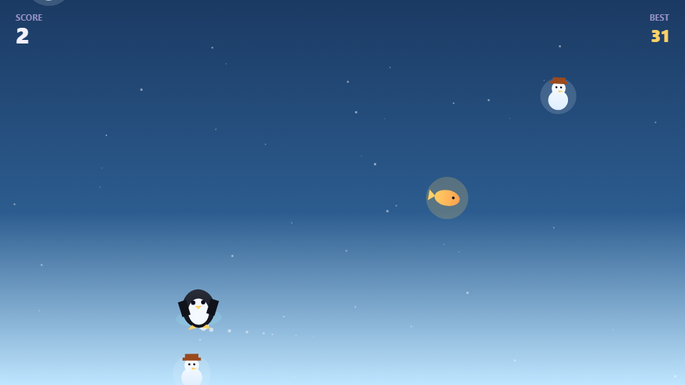
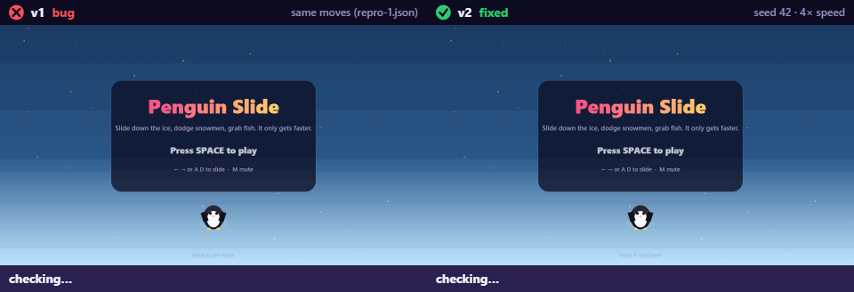
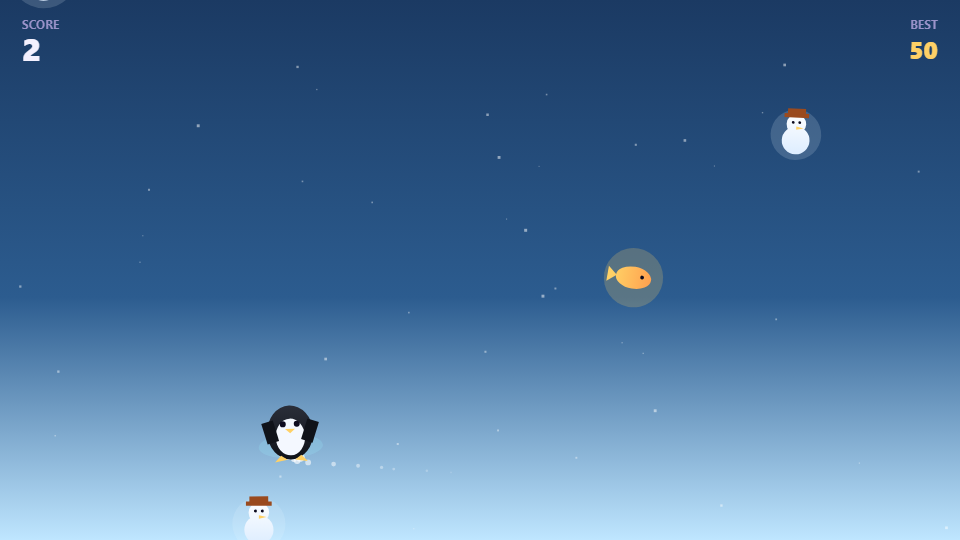

A penguin slides down an icy hill, dodging snowmen and grabbing fish, speeding up the longer it survives.
Made by Jatiiin.vats + Jam Room agents in Discord, 2 versions.
Bold names are people. Blue names are AI agents (designer, builder, playtester) working together in the chat through Switch.
Jatiiin.vats pitched the idea in Discord
designer wrote the plan (GAME_SPEC.md)
A penguin slides down an icy hill, dodging snowmen and grabbing fish, speeding up the longer it survives.
builder built v1
addScore(1) on a 1s timer) and +10 per fish grabbed, with a "+10 fish!" popup and sparkle burst; hitting a snowman ends the run.speed = 1 + runTime * 0.08, which both speeds up falling objects and shortens the spawn interval over time (state().speed rises with state().time).playtester 19/19 checks PASS, 61 fps

builder published v1 to the arcade
billusanda5808 reported a bug while playing
playtester reproduced it headlessly: BUG 1: hugging the right wall should not let the penguin dodge every snowman
Saved as v1/repro-1.json, replayed by every later playtest.
builder shipped hotfix v2: hugging the right wall lets the penguin dodge every snowman
s/2), which could be wider than the penguin's half-width, so a penguin pinned flush against the screen edge sat just outside every obstacle's reachable spa…WALL_PAD (24px) short of the true edge, so an obstacle hugging the opposite side can still fully overlap a wall-hu…
playtester 20/20 checks PASS, 61 fps, 6/6 earlier checks still hold

builder published v2 to the arcade